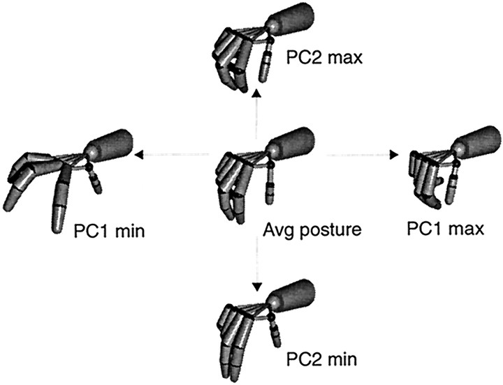

Synergies and Motor Primitives
Part of a series on sensorimotor neuroscience and robot learning: impedance · internal models · optimal feedback control · touch and grip · synergies and primitives · population dynamics.
The hand has more than twenty degrees of freedom and the arm and body many more, yet movements are coordinated as if far fewer variables were in play. Neuroscience found low-dimensional structure at several levels: spinal force fields that add like vectors, muscle synergies that combine into natural behaviours, and hand postures that live near a plane. Robotics turned the same idea into eigengrasps, underactuated hands and movement primitives.
1. Force fields that add
Bizzi, Mussa-Ivaldi and Giszter (1991) stimulated the spinal cord of frogs and measured the force the leg produced at many positions. Each stimulation site produced a convergent force field, pulling the limb toward an equilibrium posture. Stimulating two sites together produced, approximately, the vector sum of the two fields. A small set of fields, combined linearly, could in principle span a large repertoire of movements.
2. Muscle synergies
d'Avella, Saltiel and Bizzi (2003) went from stimulation to natural behaviour. Recording many muscles in frogs during kicking, they decomposed the activity into a few time-varying synergies, fixed spatiotemporal patterns of muscle activation, each scaled in amplitude and shifted in time. A small number of synergies reconstructed the natural behaviour. The decomposition is a factorisation of the form
$$m(t) \approx \sum_{i=1}^{k} c_i\, w_i(t - t_i),$$with \(k\) much smaller than the number of muscles.
3. Postural hand synergies
Santello, Flanders and Soechting (1998) recorded 15 joint angles of the hand while subjects shaped it to grasp 57 imagined objects. Principal components analysis showed that the first two components accounted for more than 80% of the variance. The first component is a coordinated flexion of the knuckles of all fingers, with finger adduction and thumb rotation: the whole hand closing at once. The second reshapes the fingers while the thumb repeats the same pattern. Higher components were small but carried information about the object, so the low-dimensional description is a backbone, not the whole story.

4. Synergies in robot hands
Ciocarlie and Allen (IJRR 2009) used low-dimensional "eigengrasp" subspaces to plan grasps for dexterous robot hands, searching a handful of synergy amplitudes instead of every joint. Catalano et al. (IJRR 2014) built the idea into hardware: the Pisa/IIT SoftHand has a single actuator driving an adaptive synergy, and the compliant transmission lets the fingers conform to the object. The synergy sets the default shape; contact and compliance fill in the rest, which is close to Santello's backbone-plus-detail picture.
5. Movement primitives as attractors
Dynamic movement primitives (Ijspeert et al., Neural Computation 2013) are the trajectory-level cousin. Each degree of freedom is a stable spring–damper pulled toward a goal \(g\), plus a learned forcing term that shapes the path and vanishes as a phase variable \(s\) decays:
$$\tau\dot z = \alpha_z\big(\beta_z(g - y) - z\big) + f(s)\,(g - y_0), \qquad \tau\dot y = z, \qquad \tau\dot s = -\alpha_s s,$$ $$f(s) = \frac{\sum_i \psi_i(s)\, w_i}{\sum_i \psi_i(s)}\, s .$$The weights \(w_i\) are fit to one demonstration by linear regression. Because the forcing term fades, the system always converges to the goal; because it is scaled by \(g - y_0\), the same weights produce the same shape for new goals; and because it is a dynamical system, a push is absorbed rather than replayed (Figure 2).
6. What robot learning should take from this
- Action spaces with structure. Synergies and primitives are hand-designed latent action spaces. A policy that outputs a few synergy amplitudes, or primitive parameters, explores a much smaller space, at the cost of reach; learned latent action spaces are the data-driven version.
- Backbone plus compliance. The SoftHand lesson is that a low-dimensional command works because compliance absorbs the mismatch with the object. Low-dimensional control and compliant contact go together.
- Keep the high-order detail. Santello's small components carried object information. Truncating to two synergies is fine for power grasps and not for in-hand manipulation.
References
| Reference | Venue |
|---|---|
| Bizzi, Mussa-Ivaldi, Giszter, Computations underlying the execution of movement: a biological perspective | Science 253, 1991 |
| Santello, Flanders, Soechting, Postural hand synergies for tool use | J. Neurosci. 18, 1998 |
| d'Avella, Saltiel, Bizzi, Combinations of muscle synergies in the construction of a natural motor behavior | Nat. Neurosci. 6, 2003 |
| Ciocarlie, Allen, Hand posture subspaces for dexterous robotic grasping | IJRR 28, 2009 |
| Ijspeert et al., Dynamical movement primitives: learning attractor models for motor behaviors | Neural Comput. 25, 2013 |
| Catalano et al., Adaptive synergies for the design and control of the Pisa/IIT SoftHand | IJRR 33, 2014 |